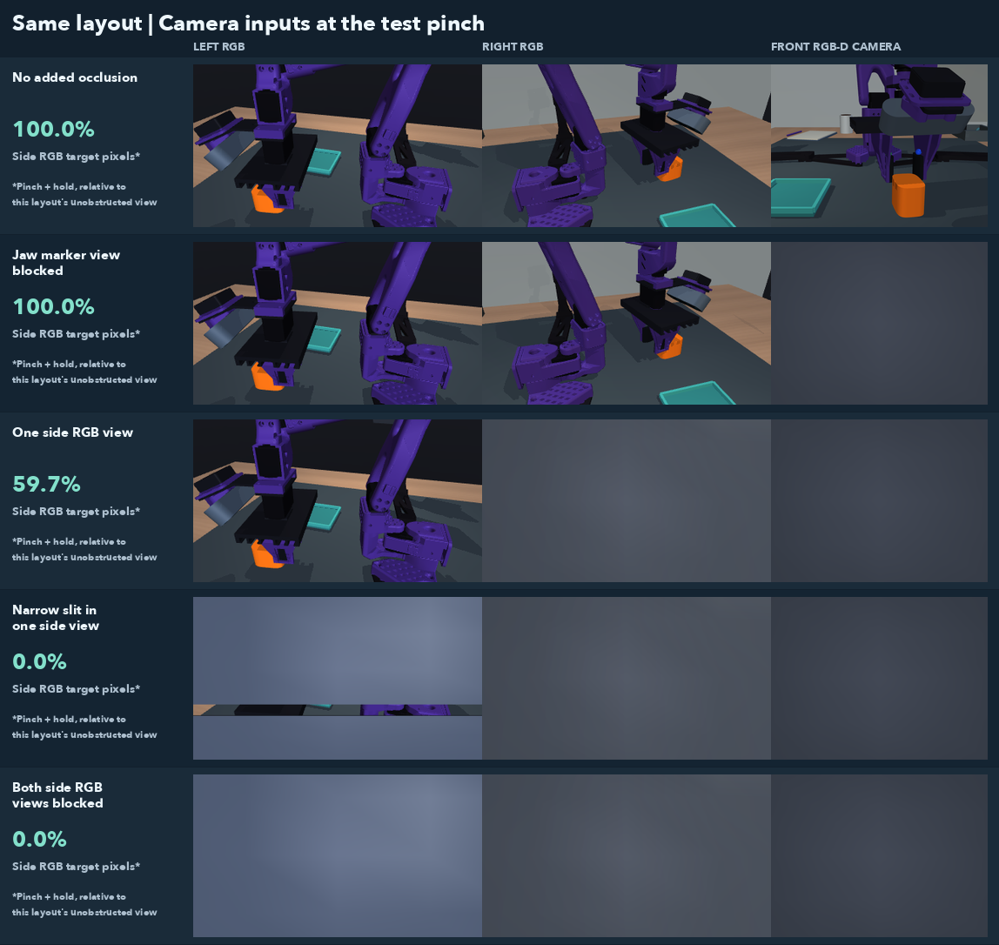

편심 원기둥 6번
0 N이 의미하는 것을 명확히 했습니다.
초기 Astra는 양쪽 0 N을 읽고도 측면에서 턱과 원기둥이 겹쳐 보이자 그립 보강을 골랐습니다. 닫힘 전체 접촉 샘플, 압력 중심, 명령과 실제 턱 간격을 함께 전달했습니다.
24개 닫힘 샘플 모두 0 N이고 30 mm 명령까지 닫힌 기록을 보고, 촉각 제공에서 위치 보정으로 바뀌어 안착했습니다.
10/12 · 9/12촉각 제공 · 제외
실험 설계
손목 RGB-D로 물체의 위치와 윤곽을 추정합니다. 가림은 이 초기 스캔 뒤에 들어옵니다.
그리퍼를 닫고 짧게 들어 봅니다. 좌우 RGB, 턱 간격과 TCP 높이를 양쪽 조건에 같이 줍니다.
GPT-6.2 Astra xhigh가 위치 보정과 그립 보강 중 하나를 고릅니다. 촉각 제공에서는 양쪽 패드의 힘과 접촉 이력도 읽습니다.
같은 IK 제어기로 선택을 실행합니다. 턱을 열고 후퇴한 뒤 물체가 트레이 안에서 바닥과 접촉하며 안정돼야 성공입니다.
첫 파지 위치를 물체 중심에서 벗어나게 했습니다. 위치 보정은 물체 중심으로 돌아가 같은 닫힘 명령으로 다시 잡습니다.
패드와 물체 사이의 마찰을 낮췄습니다. 그립 보강은 같은 XY 위치에서 더 좁은 닫힘 명령을 사용합니다.
한 쌍은 동일한 물리 배치와 카메라 데이터를 재현한 촉각 제공 1회와 제외 1회입니다. 경과 시간에는 초기화·관측·Astra 호출·동작·채점이 포함됩니다. 영상은 MuJoCo 물리 시간으로 재생합니다.
초기 검증
첫 파지 후 내려놓고 두 재파지를 같은 상태에서 시작했습니다. 표는 첫 시도가 실패한 경우의 리프트 복구입니다.
| 첫 파지 실패 | 위치 보정 | 그립 보강 |
|---|---|---|
| 편심 14개 | 14/14 | 5/14 |
| 저마찰 16개 | 0/16 | 12/16 |
리프트 기준은 마지막 0.24초 동안 8 mm 이상, 기울기 20° 이내이며 작업대에 닿지 않는 상태였습니다. 이 검증의 위치 보정은 MuJoCo 물체 위치를 사용했습니다.
초기 테스트 설정과 재현 코드같은 12개 배치에서의 개선
첫 촉각 유무 비교에서는 두 모드 모두 9/12 안착했습니다. 실패 로그에서 모델의 해석과 그리퍼의 실행 문제를 차례로 확인했습니다.
편심 원기둥 6번
초기 Astra는 양쪽 0 N을 읽고도 측면에서 턱과 원기둥이 겹쳐 보이자 그립 보강을 골랐습니다. 닫힘 전체 접촉 샘플, 압력 중심, 명령과 실제 턱 간격을 함께 전달했습니다.
24개 닫힘 샘플 모두 0 N이고 30 mm 명령까지 닫힌 기록을 보고, 촉각 제공에서 위치 보정으로 바뀌어 안착했습니다.
10/12 · 9/12촉각 제공 · 제외
저마찰 원기둥 1·5번
물체가 빠진 뒤 닫힌 턱을 그대로 내리자 원기둥을 한쪽에서 밀어 11.2°, 9.4° 기울였습니다. 보강 뒤에도 다시 들어 올릴 때 접촉력이 0 N으로 떨어졌습니다.
위에서 턱 열기, 열린 채 하강, 같은 위치 재파지, 8 mm 상승을 양쪽 모드에 적용했습니다. 두 원기둥 모두 복구됐습니다.
12/12 · 11/12촉각 제공 · 제외
편심 원기둥 6번 · 촉각 제외
시뮬레이션의 정면 RGB-D와 턱 표식으로 얻은 턱 위치를 손목 깊이의 물체 윤곽과 비교했습니다. 턱 중심은 6번의 물체 윤곽 밖으로 8.37 mm 벗어났습니다.
촉각 없이도 원래 장면에서 위치 보정을 골랐습니다. 정렬값은 12개 중 11개에서 얻었고, 표식이 가려진 배치에서는 기존 관측을 사용했습니다.
12/12 · 12/12촉각 제공 · 제외
새 물체 가림 파일럿
육각기둥과 타원기둥의 새 배치 4개를 세 시야에서 반복했습니다. 초기 손목 RGB-D는 보존하고, 파지와 리프트 시점에 정면 표식이나 양쪽 측면 RGB를 가렸습니다.
| 시야 | 촉각 제공 | 촉각 제외 |
|---|---|---|
| 가림 없음 | 4/4 | 4/4 |
| 턱 표식 가림 | 4/4 | 4/4 |
| 물체와 턱 표식 가림 | 4/4 | 2/4 |
전체 12/12 대 10/12. 강한 가림에서 차이가 난 두 건은 편심이었습니다. 다음 배치에서는 카메라 한쪽과 좁은 틈을 추가해 시야 차이를 더 잘게 나눴습니다.
새 물체 3종 · 물리 배치 6개 × 시야 5종
모서리 절삭 블록, 둥근 직사각기둥, 테이퍼 블록을 각기 편심과 저마찰에 배치했습니다. 같은 배치를 다섯 시야에서 반복하고 두 입력 모드를 짝지었습니다.
| 가림 단계 | 측면 RGB 물체 픽셀 | 안착 촉각 제공 / 제외 | 총 시간 촉각 제공 / 제외 |
|---|---|---|---|
| 추가 가림 없음 | 100% | 6/6·6/6 | 8.34초·8.94초 |
| 정면 턱 표식 가림 | 100% | 6/6·5/6 | 8.85초·15.57초 |
| 한쪽 RGB만 보임 | 52.7% | 6/6·5/6 | 9.21초·16.95초 |
| 한쪽 RGB의 좁은 틈 | 13.6% | 6/6·4/6 | 8.56초·21.64초 |
| 양쪽 측면 RGB 가림 | 0% | 6/6·4/6 | 9.02초·17.11초 |
| 전체 | — | 30/30·24/30 | 8.82초·17.16초 |
픽셀은 파지와 유지 프레임에서 보이는 주황색 물체 영역을 같은 배치의 무가림 영상과 비교한 중앙값입니다. 정면 카메라를 가려도 측면 RGB의 픽셀은 유지됩니다. 추가 가림 없는 조건의 정면 정렬값은 4/6에서 확보됐습니다.
편심은 15/15 대 9/15. 차이가 난 여섯 쌍에서 촉각 제공은 한쪽 패드 접촉을 읽고 위치 보정을 골랐습니다.
저마찰은 양쪽 모두 15/15. 두 모드 모두 그립 보강을 골랐습니다.
전체 영상
가림 조건과 안착 결과로 골라 보세요. 영상 상단은 실제 MuJoCo 동작, 아래는 Astra가 공유한 파지 시점의 측면 RGB입니다.
30쌍
전체 기록과 해석
| 실험 단계 | 촉각 제공 | 촉각 제외 |
|---|---|---|
| 최초 촉각 비교 | 9/12 · 9.53초 | 9/12 · 23.12초 |
| 닫힘 접촉 이력 | 10/12 · 8.10초 | 9/12 · 22.50초 |
| 열린 턱 하강 | 12/12 · 8.27초 | 11/12 · 19.06초 |
| RGB-D 정렬 | 12/12 · 8.25초 | 12/12 · 8.35초 |
| 새 물체 가림 파일럿 | 12/12 · 8.39초 | 10/12 · 12.65초 |
| 가림 다섯 단계 · 30쌍 | 30/30 · 8.82초 | 24/30 · 17.16초 |
같은 여섯 물리 배치를 반복한 MuJoCo 실험입니다. 가림은 최초 위치 추정 이후에 적용했습니다. 시간은 각 호출의 실측 중앙값입니다. 가림 단계별로 호출 지연의 편차가 있었습니다.
30쌍 전체에서 가림 단계별로 카메라와 초기 물리 관측을 일치시켰습니다. 렌더링 검사로 멈춘 한 회차는 원본을 보관하고 동일 입력으로 다시 실행했습니다.
